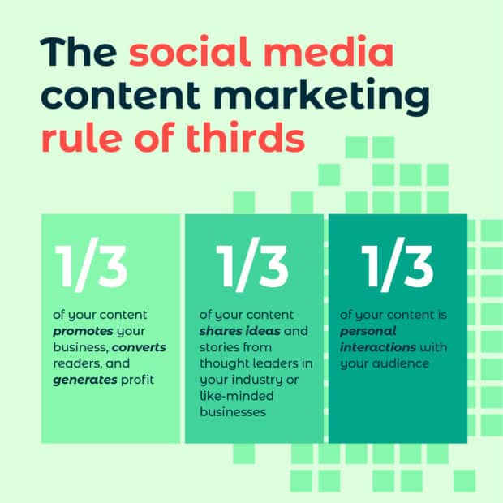

Choose goals that align to business objectives
Learn everything you can about your audience
Get to know your competition
Do a social media audit
Content Creation Rule of Thumb
Social Media Rule of Thirds

Designating Content vs Engagement
Understanding Post Frequency
End of Day Progress Report